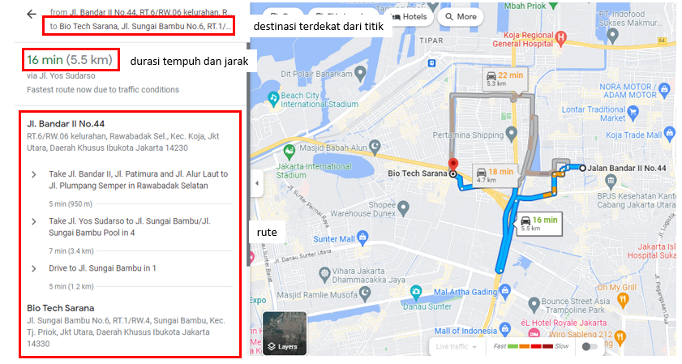

Contoh Pengolahan Data GeoJSON Menggunakan shapely, geopandas, dan plotly (in Python)
Contents
Contoh Pengolahan Data GeoJSON Menggunakan shapely, geopandas, dan plotly (in Python)#
# data wrangling, inspecting and utilities modules
import pandas as pd
import numpy as np
import geopandas
# informative chart modules
import plotly.express as px
import matplotlib.pyplot as plt
# geo module
from shapely.geometry import Polygon, MultiPolygon, Point
# utilities
import random
import warnings
import json
# setting pandas options
pd.set_option('display.float', '{:,.2f}'.format)
pd.set_option('display.max_columns', 75)
pd.set_option('display.max_rows', 75)
pd.set_option('display.max_info_columns', 50)
warnings.filterwarnings('ignore', category=DeprecationWarning)
1. Low-level Operations menggunakan shapely#
Package shapely memiliki banyak tipe geometri (lihat dokumentasi untuk info lebih jelasnya). Kita akan menggunakan tipe geometri yang paling sering dioperasikan menggunakan file geojson: Point, Polygon, dan MultiPolygon. Object geometry shapely bersifat immutable.
Contoh implementasi: random sampling point di dalam polygon#
Berikut adalah polygon DKI Jakarta (tidak termasuk kepulauan seribu). Polygon ini merupakan polygon level 1 (administratif level provinsi).

Kita akan membuat polygon diatas dalam bentuk object shapely:
filename = 'data\DKI_JAKARTA_lvl_1.json'
with open(filename, 'r') as f:
poly_geojson_1 = json.load(f)
poly_coord = poly_geojson_1['features'][0]['geometry']['coordinates'][0]
poly_obj = Polygon(shell=poly_coord)
Dalam code diatas:
Kita membaca file geojson menggunakan package
jsonKoordinat polygon kita akses didalam object
jsondari tahap sebelumnyaKita meng-construct
shapely.Polygondengan menggunakan koordinat polygon sebagaishellkwags.
Kita bisa memanfaatkan attribut dan method dari object shapely.Polygon. Katakanlah kita mau mengecek apakah suatu titik koordinat berada di area DKI Jakarta. Kita gunakan geometri point, yaitu shapely.Point.
Mengapa perlu menggunakan shapely.Point? Ini karena method yang akan kita gunakan (shapely.Polygon.contains) mengharuskan kita untuk passing argument berupa object shapely.
coordinate = (106.91497998166815, -6.254602478608049)
p = Point(coordinate)
print(f'coordinate in DKI Jakarta: {poly_obj.contains(p)}')
coordinate in DKI Jakarta: True
Dengan menggunakan method shapely.Polygon.contains() kita mengeceka apakah shapely.Point berada di dalam polygon tersebut.
Problem di atas dapat kita kembangkan lagi, sebagai contoh: Tentukan 100 titik sampling secara random di dalam lingkup DKI Jakarta.
Kode dibawah adalah contoh solusi dari problem tersebut:
def generate_random_points(polygon: object, num_points):
minx, miny, maxx, maxy = polygon.bounds
points = []
while len(points) < num_points:
x = random.uniform(minx, maxx)
y = random.uniform(miny, maxy)
p = Point(x, y)
if polygon.contains(p):
points.append((y, x))
return np.array(points)
# generate random points inside polygon
sampling_points = generate_random_points(poly_obj, 100)
# plot
fig = px.scatter_mapbox(
lat=sampling_points[:, 0], lon=sampling_points[:, 1],
color_discrete_sequence=np.repeat('red', len(sampling_points))
)
fig.update_layout(
title='Sampling Points',
mapbox_style="stamen-toner",
autosize=True,
hovermode='closest',
mapbox=dict(zoom=9)
)
fig.show(renderer='iframe')
Dalam kode diatas:
Kita menggunakan attribute
shapely.Polygon.bounduntuk mendapatkan informasi terkait boundary polygon.Kita generate random point di dalam range boundary tersebut
Kita cek, apakah titik tersebut berada di dalam polygon? Jika tidak, kita generate ulang titiknya sampai jumlah titik yang didapat sesuai
Dapat kita lihat bahwa semua titik berada di dalam lingkup administratif DKI Jakarta.
Multipolygon#
shapely.MultiPolygon adalah object untuk menyimpan deretan Polygon.
filename = 'data\DKI_JAKARTA_lvl_3.json'
with open(filename, 'r') as f:
poly_geojson_3 = json.load(f)
districts = {}
for feature in poly_geojson_3['features']:
districts[feature['properties']['NAME_3']] = Polygon(feature['geometry']['coordinates'][0][0])
poly_districs = MultiPolygon([values for values in districts.values()])
Kita bisa mengakses object di dalam MultiPolygon:
print(f'Luas area: {poly_districs.geoms[1].area}')
coordinate = (106.91497998166815, -6.254602478608049)
p = Point(coordinate)
print(f'Coordinate in geoms: {poly_districs.geoms[1].contains(p)}')
Luas area: 0.0008776349999998809
Coordinate in geoms: False
2. Implementasi geopandas#
Package geopandas adalah kombinasi antara pandas dan shapely sebagai package untuk mengoperasikan geometric object. Object utamanya yaitu GeoDataFrame.
Membuat GeoDataFrame dengan Membaca GeoJSON#
Kita bisa membuat GeoDataFrame menggunakan geopandas.read_file:
jakarta_gdf = geopandas.read_file('data\DKI_JAKARTA_lvl_3.json')
jakarta_gdf = jakarta_gdf.rename(
columns={
'COUNTRY': 'country',
'NAME_1': 'province',
'NAME_2': 'city',
'NAME_3': 'district'}
)
jakarta_gdf = jakarta_gdf[['country', 'province', 'city', 'district', 'geometry']]
jakarta_gdf.head()
| country | province | city | district | geometry | |
|---|---|---|---|---|---|
| 0 | Indonesia | JakartaRaya | JakartaBarat | Cengkareng | MULTIPOLYGON (((106.70850 -6.18110, 106.70040 ... |
| 1 | Indonesia | JakartaRaya | JakartaBarat | Grogolpetamburan | MULTIPOLYGON (((106.79450 -6.15270, 106.79940 ... |
| 2 | Indonesia | JakartaRaya | JakartaBarat | Kalideres | MULTIPOLYGON (((106.68870 -6.17120, 106.69000 ... |
| 3 | Indonesia | JakartaRaya | JakartaBarat | Kebonjeruk | MULTIPOLYGON (((106.78270 -6.20260, 106.78350 ... |
| 4 | Indonesia | JakartaRaya | JakartaBarat | Kembangan | MULTIPOLYGON (((106.72020 -6.22420, 106.71760 ... |
Dari GeoDataFrame diatas kita dapat setiap features dari GeoJSON DKI Jakarta level 3. Kolom geometry menyimpan object shapely:
sample = jakarta_gdf.geometry[0]
print(type(sample))
sample
<class 'shapely.geometry.multipolygon.MultiPolygon'>
Operasi yang Melibatkan GeoPandas#
GeoPandas mempunyai tools untuk mengolah GeoDataFrame (satu atau lebih). Dalam contoh kali ini, kita akan menggabungkan dua GeoDataFrame menggunakan geopandas.sjoin.
Di dalam repository ini terdapat data yang berisi jarak dari suatu titik (lat, long) terhadap fasilitas publik terdekat (dalam contoh ini adalah rumah sakit). Dataset ini berisi records berikut:

Kita akan meng-construct satu GeoDataFrame menggunakan dataset ini!
sampling_df = pd.read_csv('data\dki_data_akses_hospital.csv')
sampling_df.head()
| waktu | tag | lat | long | tag_tujuan | tujuan_terdekat | durasi_tempuh | durasi_tempuh_unit | jarak_tempuh | jarak_tempuh_unit | rute | |
|---|---|---|---|---|---|---|---|---|---|---|---|
| 0 | 2023-02-06_13-04 | mengemudi | -6.25 | 106.91 | hospital | Harum Sisma Medika Hospital, Jl. Lobi dan UGD ... | 9.00 | min | 2.50 | km | Jl. Elang Malindo |
| 1 | 2023-02-06_13-04 | mengemudi | -6.25 | 106.91 | hospital | Harum Sisma Medika Hospital, Jl. Lobi dan UGD ... | 9.00 | min | 2.50 | km | Jl. Raya Jatiwaringin |
| 2 | 2023-02-06_13-04 | mengemudi | -6.25 | 106.91 | hospital | Harum Sisma Medika Hospital, Jl. Lobi dan UGD ... | 9.00 | min | 2.50 | km | Jl. Elang Malindo V |
| 3 | 2023-02-06_13-04 | mengemudi | -6.25 | 106.91 | hospital | Harum Sisma Medika Hospital, Jl. Lobi dan UGD ... | 9.00 | min | 2.50 | km | Jl. Elang Malindo III |
| 4 | 2023-02-06_13-04 | mengemudi | -6.25 | 106.91 | hospital | Harum Sisma Medika Hospital, Jl. Lobi dan UGD ... | 9.00 | min | 2.50 | km | Jl. Wirajasa |
Dapat kita lihat bahwa data tersebut dalam long format. Dalam satu destinasi terdapat banyak rute (jalan) yang dilalui dari titik ke destinasi terdekat.
Dalam contoh ini, kita tidak membutuhkan data rute ini:
sampling_df = sampling_df\
.drop(columns=['rute'])\
.drop_duplicates()\
.reset_index(drop=True)
sampling_df.head()
| waktu | tag | lat | long | tag_tujuan | tujuan_terdekat | durasi_tempuh | durasi_tempuh_unit | jarak_tempuh | jarak_tempuh_unit | |
|---|---|---|---|---|---|---|---|---|---|---|
| 0 | 2023-02-06_13-04 | mengemudi | -6.25 | 106.91 | hospital | Harum Sisma Medika Hospital, Jl. Lobi dan UGD ... | 9.00 | min | 2.50 | km |
| 1 | 2023-02-06_13-05 | mengemudi | -6.22 | 106.92 | hospital | Rumah Sakit Harapan Jayakarta, Blok KM No.18, ... | 12.00 | min | 5.70 | km |
| 2 | 2023-02-06_13-06 | mengemudi | -6.18 | 106.78 | hospital | RS Grha Kedoya, Jl. Panjang No.26, RT.15/RW.7,... | 12.00 | min | 3.70 | km |
| 3 | 2023-02-06_13-07 | mengemudi | -6.16 | 106.96 | hospital | Gading Pluit Hospital | 22.00 | min | 9.70 | km |
| 4 | 2023-02-06_13-07 | mengemudi | -6.34 | 106.82 | hospital | Hospital Ali Sibroh Malisi, Jl. Wr. Sila No.1,... | 6.00 | min | 1.50 | km |
Kolom lat dan long adalah 100 titik sampling yang kita dapat sebelumnya.
Sekarang kita akan convert DataFrame diatas menjadi GeoDataFrame:
sampling_gdf = geopandas.GeoDataFrame(data=sampling_df)
sampling_gdf.head()
| waktu | tag | lat | long | tag_tujuan | tujuan_terdekat | durasi_tempuh | durasi_tempuh_unit | jarak_tempuh | jarak_tempuh_unit | |
|---|---|---|---|---|---|---|---|---|---|---|
| 0 | 2023-02-06_13-04 | mengemudi | -6.25 | 106.91 | hospital | Harum Sisma Medika Hospital, Jl. Lobi dan UGD ... | 9.00 | min | 2.50 | km |
| 1 | 2023-02-06_13-05 | mengemudi | -6.22 | 106.92 | hospital | Rumah Sakit Harapan Jayakarta, Blok KM No.18, ... | 12.00 | min | 5.70 | km |
| 2 | 2023-02-06_13-06 | mengemudi | -6.18 | 106.78 | hospital | RS Grha Kedoya, Jl. Panjang No.26, RT.15/RW.7,... | 12.00 | min | 3.70 | km |
| 3 | 2023-02-06_13-07 | mengemudi | -6.16 | 106.96 | hospital | Gading Pluit Hospital | 22.00 | min | 9.70 | km |
| 4 | 2023-02-06_13-07 | mengemudi | -6.34 | 106.82 | hospital | Hospital Ali Sibroh Malisi, Jl. Wr. Sila No.1,... | 6.00 | min | 1.50 | km |
GeoDataFrame diatas belum sepenuhnya menjadi gdf karena kekurangan satu data vital: geometric spatial data. Oleh karena itu, kita akan membuat satu kolom geometric yang mengandung geometric dalam format shapely.Point:
def get_point(x, y):
return Point(x, y)
get_point_vect = np.vectorize(get_point)
sampling_gdf = sampling_gdf.assign(
geometry=lambda x: geopandas.GeoSeries.from_xy(x.long, x.lat)
)
sampling_gdf = geopandas.GeoDataFrame(sampling_gdf, crs=4326)
Kita akan menggabungkan kolom [district, geometry] dari jakarta_gdf ke dalam sampling_gdf dengan menggunakan codes berikut:
sampling_gdf_joined = \
geopandas.sjoin(
jakarta_gdf[['city', 'district', 'geometry']],
sampling_gdf,
how='inner', predicate='contains')
sampling_gdf_joined.head()
| city | district | geometry | index_right | waktu | tag | lat | long | tag_tujuan | tujuan_terdekat | durasi_tempuh | durasi_tempuh_unit | jarak_tempuh | jarak_tempuh_unit | |
|---|---|---|---|---|---|---|---|---|---|---|---|---|---|---|
| 0 | JakartaBarat | Cengkareng | MULTIPOLYGON (((106.70850 -6.18110, 106.70040 ... | 31 | 2023-02-06_13-25 | mengemudi | -6.18 | 106.71 | hospital | Klinik Citra Keluarga Medika, Jl. Raya No.74 R... | 8.00 | min | 1.90 | km |
| 0 | JakartaBarat | Cengkareng | MULTIPOLYGON (((106.70850 -6.18110, 106.70040 ... | 87 | 2023-02-06_14-00 | mengemudi | -6.17 | 106.72 | hospital | Pondok Indah Hospital - Puri Indah, Jl. Puri I... | 21.00 | min | 6.90 | km |
| 0 | JakartaBarat | Cengkareng | MULTIPOLYGON (((106.70850 -6.18110, 106.70040 ... | 61 | 2023-02-06_13-45 | mengemudi | -6.17 | 106.73 | hospital | Pondok Indah Hospital - Puri Indah, Jl. Puri I... | 11.00 | min | 2.50 | km |
| 0 | JakartaBarat | Cengkareng | MULTIPOLYGON (((106.70850 -6.18110, 106.70040 ... | 64 | 2023-02-06_13-47 | mengemudi | -6.13 | 106.73 | hospital | Ciputra Hospital CitraGarden City, Jl. Satu Ma... | 13.00 | min | 4.00 | km |
| 1 | JakartaBarat | Grogolpetamburan | MULTIPOLYGON (((106.79450 -6.15270, 106.79940 ... | 14 | 2023-02-06_13-14 | mengemudi | -6.16 | 106.78 | hospital | RS Grha Kedoya, Jl. Panjang No.26, RT.15/RW.7,... | 10.00 | min | 3.00 | km |
Perhatikan bahwa kita menggunakan operasi contains, sama seperti low-level operations yang sudah dijelaskan sebelumnya. Hanya dengan menggunakan geopandas.sjoin, operasi ini dilakukan row-wise (vectorized).
Contoh Output: Geospatial Plot#
Dari GeoDataFrame diatas, terdapat MULTIPOLYGON geometry. Kita bisa menggunakan dataframe diatas untuk membuat plot berdasarkan polygon tersebut, dalam contoh ini akan dihasilkan plot level kecamatan.
agg_sampling_df = sampling_gdf_joined\
.groupby('district')\
.agg({'durasi_tempuh': 'mean', 'geometry': lambda x: x.values[0]})\
.reset_index()
agg_sampling_df = geopandas.GeoDataFrame(agg_sampling_df, crs=4326)
fig, ax = plt.subplots()
agg_sampling_df.plot('durasi_tempuh', legend=True, ax=ax)
ax.set_title('Rata-rata Durasi Tempuh (menit) ke Rumah Sakit Terdekat')
plt.show()
Di atas adalah contoh penggunaan GeoDataFrame.plot(). Dalam contoh di atas, kita melakukan aggregate mean untuk durasi tempuh berdasarkan kecamatan. Terdapat missing records di beberapa titik kecamatan.
Selain menggunakan GeoDataFrame.plot(), kita bisa menggunakan plotly untuk menghasilkan plot interaktif:
# plot
filename = 'data\DKI_JAKARTA_lvl_3.json'
with open(filename, 'r') as f:
poly_geojson_3 = json.load(f)
fig = px.choropleth(
data_frame=agg_sampling_df,
geojson=poly_geojson_3,
locations='district',
color='durasi_tempuh',
featureidkey='properties.NAME_3',
fitbounds='locations',
basemap_visible=False,
title='Rata-rata Durasi Tempuh (menit) ke Rumah Sakit Terdekat',
)
fig.show(renderer='iframe')
3. Reference#
Data GeoJSON didapat dari: GADM.
Online GeoJSON editor menggunakan: Geoman.io.